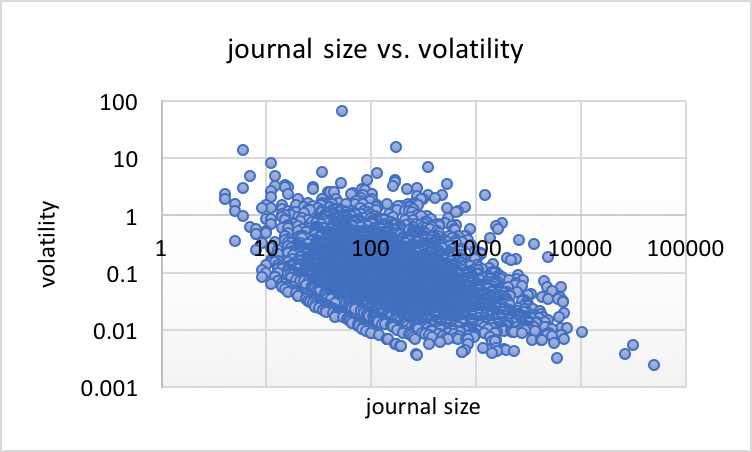

Summary: The volatility of citation averages

For a performance indicator of a population of papers to be reliable, it needs to be
relatively stable and not too sensitive to fluctuations or outliers—otherwise, the
indicator becomes more of a measure of the few outliers than the general population. So,
how volatile are Impact Factors, and other citation averages in general?
We study how a single paper can affect a journal's citation average, or Impact Factor (IF),
using data from 11669 journals in the 2017 Journal Citation Reports of Clarivate Analytics.
As a metric of IF volatility, we define the IF gain
caused by the top-cited paper in the journal during the IF time window. We find that
hundreds of
journals each year have their IF significantly boosted by a single paper—whether it is
a highly-cited paper in a small journal, or a moderately (or even low-cited) paper in a
small and otherwise low-cited journal.